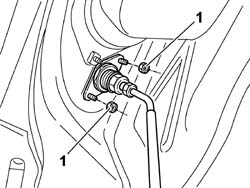
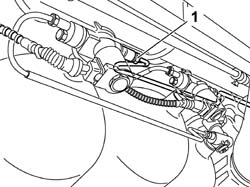
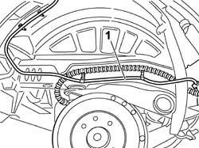
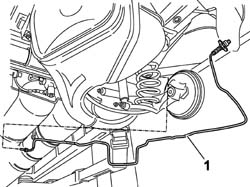

1042A43 CNG REPRESSURIZING PIPE FROM REPRESSURIZING VALVE TO SINGLE-ACTING VALVE - R.R.
- Path
- Procedures > 10 ENGINE UNIT > 1042 METHANE GAS CANNISTER AND TUBES > 1042A METHANE GAS CANNISTER AND TUBES FOR RE-CHARGING > 1042A43 CNG REPRESSURIZING PIPE FROM REPRESSURIZING VALVE TO SINGLE-ACTING VALVE - R.R.
- Kind
- repair procedure (removal / refitting; the operation number is the code)
- Applies to
- engines: 1.6 16v; production: da 06/04; only with equipment: BIPOWER
- Interactive page
- https://sloeber94.github.io/elrnDB-fMltpl/en/#/186007242
Applies to: engines: 1.6 16v; production: da 06/04; only with equipment: BIPOWER
 Removing
Removing
 Refitting
RefittingPosition the vehicle on a lift.
Proceed with draining the high pressure circuit following the instructions in the specific operation
Op. 1042A02 C.N.G. - FUEL SYSTEM SAFETY CHECK
Op. 1042E60 CNG CYLINDER UNIT PROTECTION SEAL - R R
Op. 4450B08 RUOTA POSTERIORE DESTRA - S.R.
Op. 7055B43 LH OR RH REFLECTOR(ONE) ON REAR BUMPERS - R R
1. Working from the right rear rear arch compartment, undo the nuts securing the CNG repressurising fitting to the body while holding the bolts in place from the fuel filler fitting.

Applies to: engines: 1.6 16v; production: da 06/04; only with equipment: BIPOWER
1. Undo the CNG repressurising pipe fitting on the one-way valve. Release the pipe from the retaining clips on the underbody.

Applies to: engines: 1.6 16v; production: da 06/04; only with equipment: BIPOWER
1. Release the repressurising pipe from clips securing it to the body on the right rear wheel arch compartment.

Applies to: engines: 1.6 16v; production: da 06/04; only with equipment: BIPOWER
1. Remove the pipe complete with CNG repressurising fitting and single-acting valve.

Applies to: engines: 1.6 16v; production: da 06/04; only with equipment: BIPOWER
Refitting
RemovingCheck the condition of the CNG repressurising pipe and CNG filler fitting.
Insert the recharging pipe complete with methane filler fitting into the housing in the vehicle.
Fit the repressurising pipe to the single-acting vale on the left side cylinder.
Tighten the bolts securnig the methane filler fitting to the body.
Tighten the connector for the repressurizing pipe to the single-acting valve.
Secure the recharging pipe to the underbody and right rear wheel arch compartment by means of the retaining clips.
Op. 7055B43 LH OR RH REFLECTOR(ONE) ON REAR BUMPERS - R R
Op. 4450B08 RUOTA POSTERIORE DESTRA - S.R.
Move the CNG cut-off solenoids to open position by hand and check system is efficient.
Connect the Examiner diagnostic equipment in the "Active Diagnosis" ambient, select and carry out "Gas solenoid valve relay" item in order to allow the opening of the solenoid valves and the renewal of the CNG system operating pressure; read the pressure value on the sensor located on the pressure reduction unit in the engine compartment which should be greater than or equal to 14 bar, otherwise it will not be possible to switch from petrol to methane.
Op. 1042A06 C.N.G. - FUEL SYSTEM CHECK FOR ANY LEAKS USING ELECTRONIC DETECTOR FOLLOWING OPERATIONS
Topics linked from this page (4)
- 1042A02 C.N.G. - FUEL SYSTEM SAFETY CHECK
- 1042A06 C.N.G. - FUEL SYSTEM CHECK FOR ANY LEAKS USING ELECTRONIC DETECTOR FOLLOWING OPERATIONS
- 1042E60 CNG CANISTER ASSEMBLY SHIELD/PROTECTION / - R.R.
- 7055B43 REAR WHEEL ARCH liner (one), left or right - R.R.